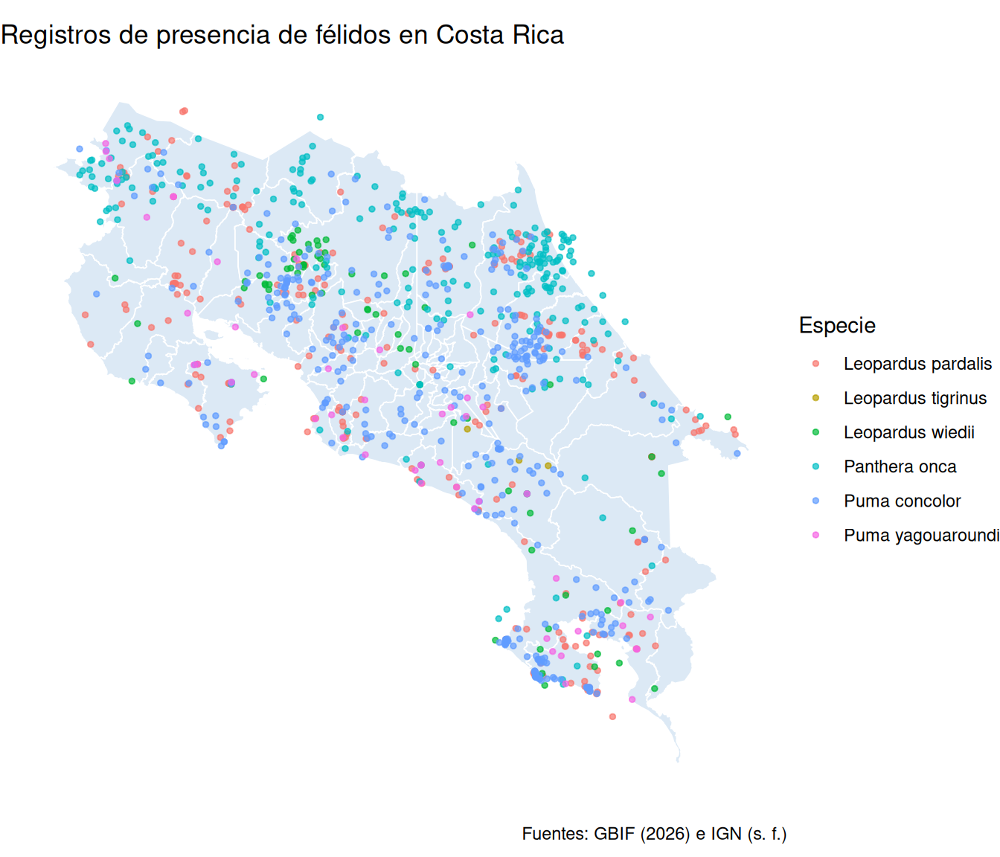
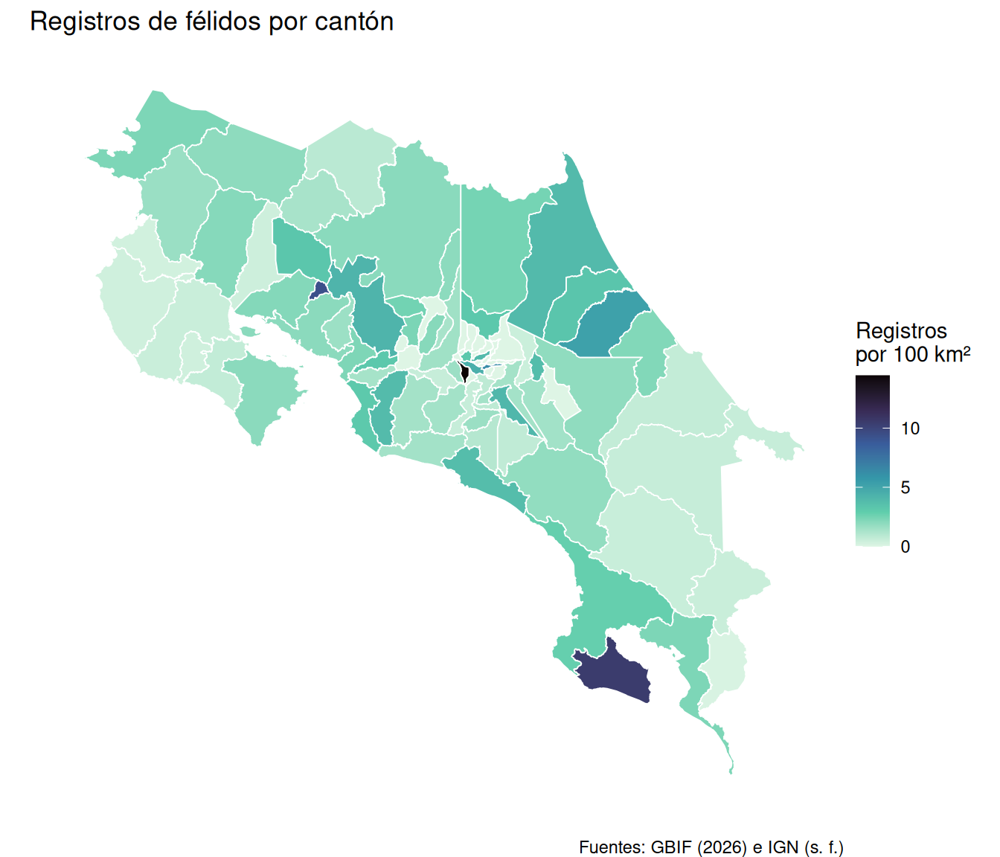
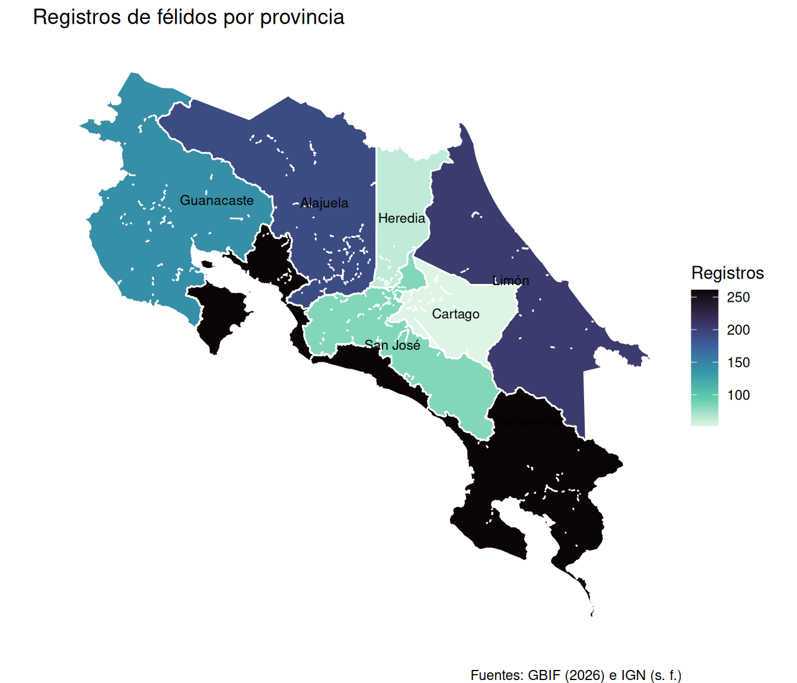
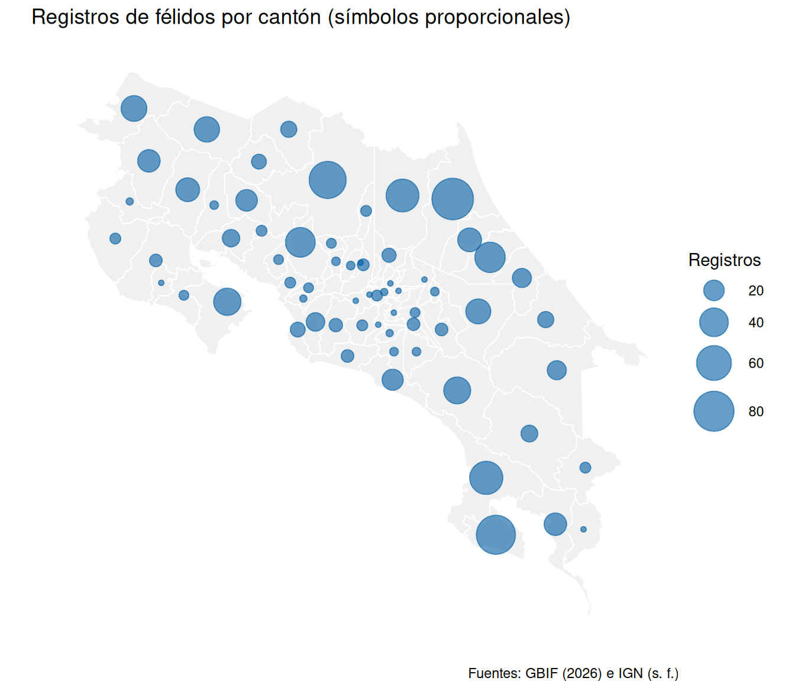
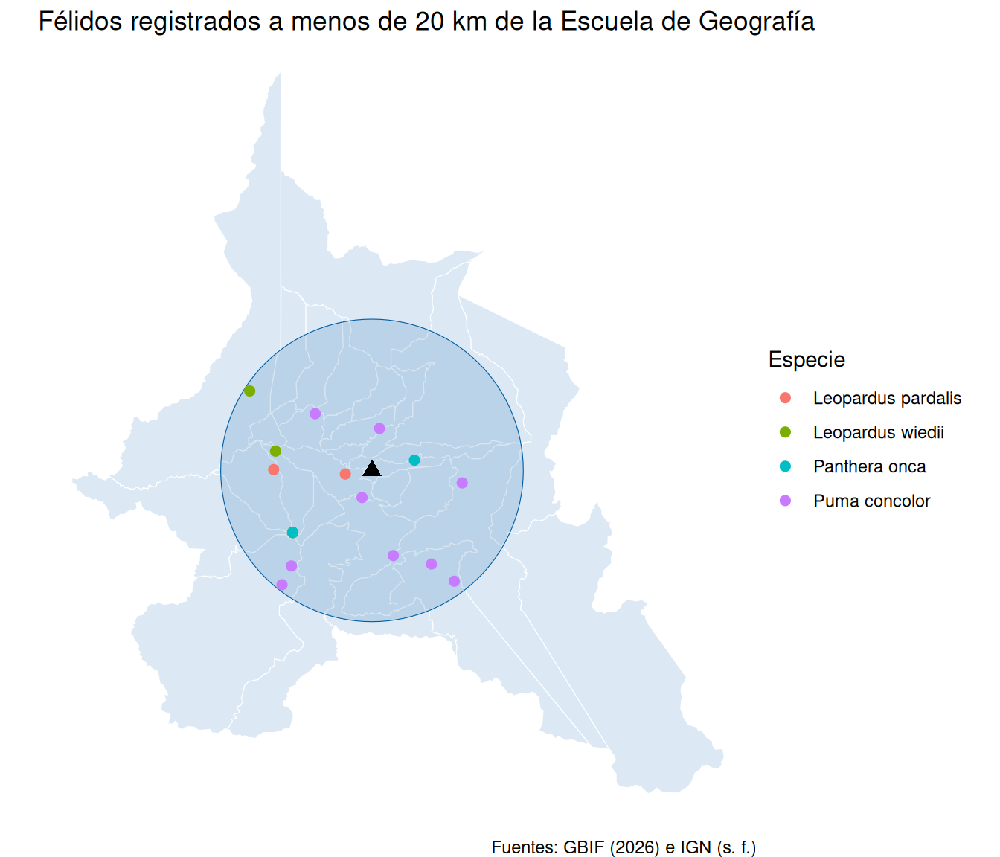

library(tidyverse)
library(sf)
# Directorio de datos en el repositorio del curso
datos <- "https://raw.githubusercontent.com/pf0953-programacionr/2026-ii/main/datos/"sf: operaciones espaciales
Trabajo previo
Lecturas
Antes de la clase, revise las siguientes lecturas: los capítulos 3 y 4 de Geocomputation with R, asignados por el programa del curso. Del capítulo 3 interesa la sección 3.2 (operaciones con atributos de datos vectoriales, que repasa lo que ya se hizo con dplyr en el capítulo anterior); del capítulo 4, las secciones 4.2.1 a 4.2.5 (subconjuntos espaciales, relaciones topológicas, unión espacial y agregación espacial).
Lovelace, R., Nowosad, J., y Münchow, J. (2025). Attribute data operations. En Geocomputation with R (2.ª ed.). Chapman and Hall/CRC. https://r.geocompx.org/attr
Lovelace, R., Nowosad, J., y Münchow, J. (2025). Spatial data operations. En Geocomputation with R (2.ª ed.). Chapman and Hall/CRC. https://r.geocompx.org/spatial-operations
Otros recursos
No hay que instalar nada nuevo: se usan sf y el tidyverse, como en el capítulo anterior. La hoja de referencia de sf resume en una página las funciones de este capítulo, y la viñeta Manipulating simple feature geometries, de la documentación de sf, las describe con ejemplos cortos.
Introducción
En el capítulo anterior las capas se leyeron, se reproyectaron, se unieron con tablas por un código y se dibujaron. Las uniones fueron las de dplyr: dos tablas que comparten una clave. Pero la mayoría de las preguntas geográficas no tiene clave: ¿en qué cantón se registró cada félido?, ¿cuántos registros hay por cantón?, ¿cuáles cantones son vecinos de San José?, ¿qué se ha observado a menos de 20 km de la Escuela de Geografía? Las dos capas de cada pregunta no comparten ninguna columna; lo que comparten es el espacio, y la relación entre sus geometrías es la clave.
Este capítulo presenta las operaciones espaciales de sf, agrupadas en cuatro familias: los predicados espaciales, que responden verdadero o falso sobre la relación entre dos geometrías (¿se intersecan?, ¿una contiene a la otra?); la unión espacial, que combina dos capas por esa relación, como left_join() lo hace por una clave; la agregación espacial, que une las geometrías de cada grupo; y las medidas y geometrías derivadas (centroides, zonas de influencia, distancias). Todas se apoyan en la biblioteca GEOS, la misma que usan QGIS y PostGIS, de modo que los resultados son los de un SIG de escritorio, pero en código reproducible.
Los datos vuelven a Costa Rica: los polígonos de los 84 cantones y las 7 provincias del Instituto Geográfico Nacional (IGN), en CR-SIRGAS / CRTM05, y los registros de presencia de félidos silvestres (puma, jaguar, manigordo, caucel, león breñero y tigrillo) descargados de GBIF, como los del ejemplo de la semana 1. Los tres archivos están en el directorio datos/ del repositorio, descritos en su README. Y la regla más importante del capítulo anterior se vuelve aún más importante: toda operación entre dos capas exige que estén en el mismo SRC, y toda medida exige un SRC proyectado adecuado a la región.
Carga de las capas
Los cantones y las provincias son GeoPackages y se leen con st_read(), como en el capítulo anterior:
cantones <- st_read(paste0(datos, "cantones.gpkg"))Reading layer `cantones' from data source
`https://raw.githubusercontent.com/pf0953-programacionr/2026-ii/main/datos/cantones.gpkg'
using driver `GPKG'
Simple feature collection with 84 features and 4 fields
Geometry type: MULTIPOLYGON
Dimension: XY
Bounding box: xmin: 156147.8 ymin: 608898.4 xmax: 658877.1 ymax: 1241118
Projected CRS: CR-SIRGAS / CRTM05provincias <- st_read(paste0(datos, "provincias.gpkg"), quiet = TRUE)Los 84 cantones son multipolígonos en un SRC proyectado, CR-SIRGAS / CRTM05 (EPSG:8908), con la extensión en metros: el xmin de 156 000 corresponde a la Isla del Coco, a 500 km de la costa, que forma parte del cantón de Puntarenas. Las geometrías están simplificadas (tolerancia de 100 m) para que los mapas se dibujen rápido; sirven a escala nacional, no para mediciones precisas.
De una tabla con coordenadas a un objeto sf
Los félidos, en cambio, llegan como la mayoría de los datos de puntos: un CSV con dos columnas de coordenadas, sin geometría. Es el caso de los registros de GBIF, de los datos de GPS, de estaciones o de encuestas, y de los que cada estudiante recopile para la tarea 3.
tabla_felidos <- read_csv(paste0(datos, "felidos.csv"))
tabla_felidos# A tibble: 1,041 × 9
gbifID species basisOfRecord eventDate year stateProvince locality
<dbl> <chr> <chr> <chr> <dbl> <chr> <chr>
1 476859057 Leopardus pa… PRESERVED_SP… 1928 1928 Cartago Turrial…
2 476861450 Leopardus pa… PRESERVED_SP… 1928 1928 Cartago Turrial…
3 5146956266 Leopardus pa… PRESERVED_SP… 1932-01-… 1932 San Jose vicinit…
4 5147044265 Leopardus pa… PRESERVED_SP… 1932-06-… 1932 San Jose vicinit…
5 1122686047 Leopardus pa… PRESERVED_SP… 1958-06 1958 Limon N/A
6 45869265 Leopardus pa… PRESERVED_SP… 1963-02-… 1963 Puntarenas P… Gromaco…
7 1065425532 Leopardus pa… PRESERVED_SP… 1963-04-… 1963 Guanacaste P… San Jua…
8 1065369705 Leopardus pa… PRESERVED_SP… 1964-10-… 1964 Puntarenas P… Potrero…
9 4174649366 Leopardus pa… PRESERVED_SP… 1965-06-… 1965 Puntarenas 14 km N…
10 45869301 Leopardus pa… PRESERVED_SP… 1965-06-… 1965 Puntarenas P… 14 km N…
# ℹ 1,031 more rows
# ℹ 2 more variables: decimalLongitude <dbl>, decimalLatitude <dbl>st_as_sf() convierte el data frame en un objeto sf a partir de las columnas de coordenadas, indicadas en coords, y del SRC en que están esas coordenadas, en crs:
felidos <- st_as_sf(
tabla_felidos,
coords = c("decimalLongitude", "decimalLatitude"),
crs = 4326
)
felidosSimple feature collection with 1041 features and 7 fields
Geometry type: POINT
Dimension: XY
Bounding box: xmin: -85.8 ymin: 8.268703 xmax: -82.61173 ymax: 11.17616
Geodetic CRS: WGS 84
# A tibble: 1,041 × 8
gbifID species basisOfRecord eventDate year stateProvince locality
* <dbl> <chr> <chr> <chr> <dbl> <chr> <chr>
1 476859057 Leopardus pa… PRESERVED_SP… 1928 1928 Cartago Turrial…
2 476861450 Leopardus pa… PRESERVED_SP… 1928 1928 Cartago Turrial…
3 5146956266 Leopardus pa… PRESERVED_SP… 1932-01-… 1932 San Jose vicinit…
4 5147044265 Leopardus pa… PRESERVED_SP… 1932-06-… 1932 San Jose vicinit…
5 1122686047 Leopardus pa… PRESERVED_SP… 1958-06 1958 Limon N/A
6 45869265 Leopardus pa… PRESERVED_SP… 1963-02-… 1963 Puntarenas P… Gromaco…
7 1065425532 Leopardus pa… PRESERVED_SP… 1963-04-… 1963 Guanacaste P… San Jua…
8 1065369705 Leopardus pa… PRESERVED_SP… 1964-10-… 1964 Puntarenas P… Potrero…
9 4174649366 Leopardus pa… PRESERVED_SP… 1965-06-… 1965 Puntarenas 14 km N…
10 45869301 Leopardus pa… PRESERVED_SP… 1965-06-… 1965 Puntarenas P… 14 km N…
# ℹ 1,031 more rows
# ℹ 1 more variable: geometry <POINT [°]>Las dos columnas de coordenadas desaparecieron y en su lugar hay una columna geometry con un punto por registro; el SRC es WGS 84 y la extensión está en grados. Dos detalles causan errores frecuentes. El orden en coords es x, y, es decir, longitud, latitud: al revés del «latitud, longitud» con que suelen escribirse las coordenadas, y si se invierte, los puntos caen en lugares absurdos. Y crs es indispensable: sin él, el objeto se crea, pero no tiene SRC, por lo que no se puede reproyectar ni combinar con otras capas. Los datos de GBIF, de GPS, de Google Maps y de casi cualquier fuente que hable de «latitud y longitud» están en WGS84, EPSG:4326. El camino inverso, de puntos a tabla, es st_coordinates(), que devuelve una matriz con las columnas X y Y.
Las dos capas están en SRC distintos, y ggplot2 lo resolvería por su cuenta al dibujar. Pero las operaciones espaciales no: los félidos se reproyectan a CRTM05 de una vez, para que todo el capítulo trabaje en el mismo SRC proyectado, en metros:
felidos <- st_transform(felidos, 8908)
st_crs(felidos)$epsg == st_crs(cantones)$epsg[1] TRUEEl mapa de las dos capas, con coord_sf() para excluir la Isla del Coco (los límites van en las unidades del SRC: metros):
ggplot() +
geom_sf(data = cantones, fill = "#dce9f5", color = "white", linewidth = 0.3) +
geom_sf(data = felidos, aes(color = species), size = 1, alpha = 0.7) +
coord_sf(xlim = c(280000, 660000), ylim = c(880000, 1250000)) +
labs(
title = "Registros de presencia de félidos en Costa Rica",
color = "Especie",
caption = "Fuentes: GBIF (2026) e IGN (s. f.)"
) +
theme_void()
Los registros se concentran en las zonas boscosas: la península de Osa, el Caribe norte, Guanacaste; el Valle Central casi no tiene. Son 1 041 registros de seis especies, en su gran mayoría observaciones humanas de la última década, con la provincia anotada a mano por quien publicó cada registro (en la columna stateProvince, que falta en muchos y está escrita de varias formas) y la localidad en texto libre. Las preguntas del capítulo empiezan aquí: ¿en qué cantón cae cada punto?
Ejercicios de esta sección: ejercicios sobre carga y puntos.
Predicados espaciales
Un predicado espacial es una pregunta sobre la relación entre dos geometrías cuya respuesta es verdadero o falso: ¿se intersecan?, ¿una contiene a la otra?, ¿se tocan solo en el borde? Las relaciones posibles están definidas con precisión en el estándar del OGC (el modelo DE-9IM) y sf las implementa como funciones st_intersects(), st_within(), st_contains(), st_touches(), etc. (tabla 1). Aplicadas a dos capas, devuelven, para cada geometría de la primera, la lista de las geometrías de la segunda con las que cumple la relación. Los cantones que interseca el cantón de San José:
san_jose <- filter(cantones, canton == "San José")
st_intersects(cantones, san_jose)Sparse geometry binary predicate list of length 84, where the predicate
was `intersects'
first 10 elements:
1: 1
2: 1
3: 1
4: (empty)
5: (empty)
6: (empty)
7: (empty)
8: 1
9: (empty)
10: 1El resultado es una lista de 84 elementos, uno por cantón, con el índice de la geometría de san_jose con que se interseca (el 1) o nada. Es una estructura incómoda para leer, y rara vez se usa directamente: lo útil es filtrar una capa con ella, lo que hace st_filter(), el equivalente espacial de filter(). Recibe la capa, la geometría de referencia y el predicado (por defecto, st_intersects):
vecinos <- st_filter(cantones, san_jose)
vecinos$canton [1] "San José" "Escazú" "Desamparados" "Goicoechea"
[5] "Alajuelita" "Tibás" "Montes de Oca" "Curridabat"
[9] "Heredia" "Santo Domingo" "Belén" San José más sus diez vecinos, tres de ellos de la provincia de Heredia. Una curiosidad instructiva: el predicado natural para «vecinos» sería st_touches() (comparten el borde, pero no el interior), y con estas capas devuelve ningún cantón. La simplificación de las geometrías desplazó los vértices unos metros, de modo que los polígonos vecinos se traslapan o se separan en lugar de compartir exactamente el límite; st_intersects() es más tolerante y por eso suele preferirse. Con geometrías sin simplificar, st_touches() da los vecinos exactos.
La pregunta inversa, ¿qué puntos están dentro de este polígono?, es el mismo filtro con los puntos como capa y el polígono como referencia. Los félidos registrados en Sarapiquí:
felidos_sarapiqui <- felidos |>
st_filter(filter(cantones, canton == "Sarapiquí"))
nrow(felidos_sarapiqui)[1] 53count(st_drop_geometry(felidos_sarapiqui), species, sort = TRUE)# A tibble: 4 × 2
species n
<chr> <int>
1 Leopardus pardalis 22
2 Puma concolor 16
3 Panthera onca 14
4 Leopardus wiedii 1| Predicado | Verdadero cuando… | Uso típico |
|---|---|---|
st_intersects()
|
comparten al menos un punto |
el más general: cualquier contacto; el predeterminado de st_filter() y st_join()
|
st_disjoint()
|
no comparten ningún punto (lo contrario de st_intersects())
|
excluir lo que toca una zona |
st_touches()
|
comparten puntos del borde, pero no del interior | vecinos, con geometrías exactas |
st_within()
|
la primera está completamente dentro de la segunda | puntos dentro de un polígono |
st_contains()
|
la primera contiene completamente a la segunda | el polígono que contiene un punto |
st_crosses()
|
una línea atraviesa un polígono u otra línea | ríos y carreteras que cruzan regiones |
st_overlaps()
|
dos geometrías de la misma dimensión se superponen parcialmente | polígonos que se traslapan |
st_is_within_distance()
|
están a menos de una distancia dada (dist)
|
proximidad sin construir una zona de influencia |
Ejercicios de esta sección: ejercicios sobre predicados espaciales.
Unión espacial
Filtrar responde una pregunta sobre un polígono. Para responderla sobre todos a la vez (¿en qué cantón está cada uno de los 1 041 registros?) está la unión espacial: st_join() combina dos objetos sf emparejando las filas cuyas geometrías cumplen un predicado, de modo que cada fila del resultado reúne los atributos de ambas capas. Es el left_join() del capítulo de dplyr, con la relación espacial como clave. Sus argumentos: las capas izquierda y derecha, join (el predicado; por defecto st_intersects) y left (TRUE, el valor predeterminado, conserva todas las filas de la izquierda, como left_join(); FALSE solo las emparejadas, como inner_join()). Los félidos con el cantón que los contiene:
felidos_cantones <- felidos |>
st_join(cantones, join = st_within)
nrow(felidos_cantones)[1] 1041felidos_cantones |>
st_drop_geometry() |>
select(species, stateProvince, provincia, canton) |>
head()# A tibble: 6 × 4
species stateProvince provincia canton
<chr> <chr> <chr> <chr>
1 Leopardus pardalis Cartago Cartago Turrialba
2 Leopardus pardalis Cartago Cartago Turrialba
3 Leopardus pardalis San Jose San José San José
4 Leopardus pardalis San Jose San José Pérez Zeledón
5 Leopardus pardalis Limon <NA> <NA>
6 Leopardus pardalis Puntarenas Province Puntarenas Coto Brus Dos detalles del resultado. La geometría es la de la capa izquierda (los puntos); la de la derecha se descarta, y las columnas de la derecha (codigo_provincia, provincia, codigo_canton, canton) se agregan a cada punto. Y, como toda unión, se verifica: se conservaron los 1 041 registros, pero ¿cuántos quedaron sin cantón?
sum(is.na(felidos_cantones$canton))[1] 44Cuarenta y cuatro registros no caen dentro de ningún cantón. Están en la costa: a unos cientos de metros, y hasta 13 km, de la línea de costa simplificada de la capa del IGN (observaciones en playas, manglares y, en algunos casos, coordenadas imprecisas). Es la lección de la escala vista desde otro lado: los resultados de una unión espacial dependen de la precisión de las dos capas, y los no emparejados hay que explicarlos, no ignorarlos. En la sección sobre medidas se calcula a qué distancia de qué cantón quedaron.
Atributo contra posición
Los registros traen la provincia como atributo (stateProvince, anotada por quien los publicó). ¿Coincide con la provincia que los contiene espacialmente?
felidos_cantones |>
st_drop_geometry() |>
filter(!is.na(provincia)) |>
count(coincide = stateProvince == provincia)# A tibble: 3 × 2
coincide n
<lgl> <int>
1 FALSE 45
2 TRUE 535
3 NA 417De los 997 registros con cantón, 417 no tienen provincia anotada y 45 tienen una distinta de la calculada. Algunas discrepancias son de grafía (San Jose, Puntarenas Province), que una limpieza con case_when() resolvería; otras son errores de quien anotó el registro (13 registros anotados en Guanacaste caen en Alajuela, en los cantones de Upala, San Ramón y San Carlos). La unión espacial sustituye el atributo, inconsistente, por un dato derivado de la posición, y es el modo usual de asignar una unidad territorial a los datos de puntos.
Conteo por polígono
Con la unión hecha, contar es un count(), y el conteo se agrega a la capa de cantones con left_join(), por el código de cantón, con el objeto sf a la izquierda (regla del capítulo anterior) y con replace_na() para los cantones sin registros, que la unión deja en NA:
registros_canton <- felidos_cantones |>
st_drop_geometry() |>
count(codigo_canton, name = "registros")
cantones <- cantones |>
left_join(registros_canton, by = "codigo_canton") |>
mutate(
registros = replace_na(registros, 0),
area_km2 = as.numeric(st_area(geom)) / 1e6,
registros_100km2 = registros / area_km2 * 100
)
cantones |>
st_drop_geometry() |>
select(canton, provincia, registros, area_km2, registros_100km2) |>
arrange(desc(registros)) |>
head() canton provincia registros area_km2 registros_100km2
1 Pococí Limón 86 2188.6580 3.929348
2 Puerto Jiménez Puntarenas 76 721.2092 10.537858
3 San Carlos Alajuela 68 3352.2804 2.028470
4 Osa Puntarenas 54 1933.3930 2.793017
5 Sarapiquí Heredia 53 2143.2570 2.472872
6 Siquirres Limón 45 854.6812 5.265121Pococí, Puerto Jiménez y San Carlos encabezan el conteo; 18 cantones, casi todos del Valle Central, no tienen ningún registro. Y, como se advirtió en el capítulo anterior, un mapa de coropletas muestra variables normalizadas: los registros por cada 100 km² y no el conteo, que favorece a los cantones grandes:
ggplot(cantones) +
geom_sf(aes(fill = registros_100km2), color = "white", linewidth = 0.3) +
scale_fill_viridis_c(option = "mako", direction = -1) +
coord_sf(xlim = c(280000, 660000), ylim = c(880000, 1250000)) +
labs(
title = "Registros de félidos por cantón",
fill = "Registros\npor 100 km²",
caption = "Fuentes: GBIF (2026) e IGN (s. f.)"
) +
theme_void()
Puerto Jiménez, con la península de Osa, destaca con más de diez registros por cada 100 km². Pero el cantón más oscuro es Escazú, con cinco registros en 35 km²: la normalización tiene su propia trampa, los denominadores pequeños, que convierten unos pocos registros en una densidad alta (Monteverde, con cinco registros en 53 km², está en el mismo caso). Y el mapa mide el esfuerzo de observación tanto como la presencia de los animales: los registros de GBIF se concentran donde hay parques nacionales, estaciones biológicas y observadores. Las dos cosas deben decirse al interpretarlo.
El orden de las capas
La unión espacial no es simétrica: st_join(felidos, cantones) y st_join(cantones, felidos) producen los mismos pares, pero con distinta geometría y distinto número de filas. En la segunda, la geometría es la de los cantones y cada cantón aparece una vez por registro:
cantones_felidos <- cantones |>
select(canton) |>
st_join(felidos, join = st_contains)
nrow(cantones_felidos)[1] 1015Mil quince filas: una por cada par cantón-registro (997), más una por cada uno de los 18 cantones sin registros, que left = TRUE conserva; los cantones con varios registros se repiten. La regla práctica: a la izquierda va la capa cuyas filas se quieren conservar en el resultado, con su geometría; si lo que se quiere es un conteo por polígono, se une con los puntos a la izquierda y se cuenta, como arriba.
Ejercicios de esta sección: ejercicios sobre unión espacial.
Agregación espacial
En el capítulo anterior se adelantó que summarize() sobre un objeto sf une las geometrías de cada grupo. Es la agregación espacial: los cantones agrupados por provincia producen el polígono de cada provincia, y las columnas se resumen como en cualquier group_by():
provincias_calculadas <- cantones |>
group_by(provincia) |>
summarize(
cantones = n(),
registros = sum(registros),
area_km2 = sum(area_km2)
)
provincias_calculadasSimple feature collection with 7 features and 4 fields
Geometry type: GEOMETRY
Dimension: XY
Bounding box: xmin: 156147.8 ymin: 608898.4 xmax: 658877.1 ymax: 1241118
Projected CRS: CR-SIRGAS / CRTM05
# A tibble: 7 × 5
provincia cantones registros area_km2 geom
<chr> <int> <int> <dbl> <GEOMETRY [m]>
1 Alajuela 16 192 9773. POLYGON ((449297.4 1097375, 448984 109…
2 Cartago 8 52 3092. POLYGON ((520156.3 1114996, 530335 111…
3 Guanacaste 11 141 10200. MULTIPOLYGON (((370469.2 1112796, 3707…
4 Heredia 10 63 2662. POLYGON ((487999.3 1101460, 487509.9 1…
5 Limón 6 204 9178. POLYGON ((625670.2 1077968, 625801.3 1…
6 Puntarenas 13 261 11302. MULTIPOLYGON (((159959.3 609495.8, 159…
7 San José 20 84 4970. POLYGON ((482716 1064659, 482428.8 106…Las fronteras cantonales interiores desaparecieron y cada provincia es un polígono o un multipolígono (Guanacaste y Puntarenas, con islas). El resultado equivale a la capa provincias del IGN, salvo por las diferencias mínimas que dejan los límites simplificados. Limón, con solo seis cantones, tiene la segunda cantidad de registros; San José, con veinte, una de las menores. La misma operación sin group_by() une todas las geometrías en una, el polígono del país, que también se obtiene con st_union().
ggplot(provincias_calculadas) +
geom_sf(aes(fill = registros), color = "white", linewidth = 0.5) +
geom_sf_text(aes(label = provincia), size = 3) +
scale_fill_viridis_c(option = "mako", direction = -1) +
coord_sf(xlim = c(280000, 660000), ylim = c(880000, 1250000)) +
labs(
title = "Registros de félidos por provincia",
fill = "Registros",
caption = "Fuentes: GBIF (2026) e IGN (s. f.)"
) +
theme_void()
Ejercicios de esta sección: ejercicios sobre agregación espacial.
Medidas y geometrías derivadas
El capítulo anterior midió áreas con st_area(). Las demás medidas y las geometrías derivadas siguen la misma regla: SRC proyectado, unidades del SRC (metros en CRTM05).
Centroides y símbolos proporcionales
st_centroid() devuelve el centro de masa de cada geometría: una capa de puntos con los mismos atributos. Sirve para colocar etiquetas, para medir distancias entre polígonos y, sobre todo, para los símbolos proporcionales, la alternativa a las coropletas cuando la variable es un conteo absoluto: un círculo en el centro de cada cantón, con el tamaño mapeado a la cantidad de registros, no confunde el tamaño del polígono con la magnitud del fenómeno.
centroides <- st_centroid(cantones)
ggplot() +
geom_sf(data = cantones, fill = "#f0f0f0", color = "white", linewidth = 0.3) +
geom_sf(data = filter(centroides, registros > 0), aes(size = registros), color = "#005da4", alpha = 0.6) +
scale_size_area(max_size = 12) +
coord_sf(xlim = c(280000, 660000), ylim = c(880000, 1250000)) +
labs(
title = "Registros de félidos por cantón (símbolos proporcionales)",
size = "Registros",
caption = "Fuentes: GBIF (2026) e IGN (s. f.)"
) +
theme_void()
scale_size_area() hace que el área del círculo, y no su radio, sea proporcional al valor, que es como el ojo compara tamaños. El mensaje st_centroid assumes attributes are constant over geometries recuerda que los atributos se copian a los puntos sin cambios (aquí se oculta con warning: false). Un detalle: el centroide de un polígono cóncavo o de un multipolígono puede caer fuera de él; en esta capa le ocurre al cantón de Alajuela, cuya forma alargada e irregular deja el centro de masa en Grecia. st_point_on_surface() garantiza un punto interior, y es lo que geom_sf_text() usa para colocar los rótulos.
dentro <- st_within(centroides, cantones, sparse = FALSE)
cantones$canton[!diag(dentro)][1] "Alajuela"Zonas de influencia
st_buffer() construye el polígono de todos los puntos a menos de una distancia de la geometría: una zona de influencia, en las unidades del SRC. Combinada con un filtro espacial, responde preguntas de proximidad: ¿qué félidos se han registrado a menos de 20 km de la Escuela de Geografía? El punto se construye con st_point() (longitud, latitud, como siempre), se le asigna el SRC de las coordenadas y se reproyecta, porque la zona se mide en metros:
escuela <- st_sfc(st_point(c(-84.0512, 9.9377)), crs = 4326) |>
st_transform(8908)
zona_20km <- st_buffer(escuela, dist = 20000)
felidos_cerca <- st_filter(felidos, zona_20km)
nrow(felidos_cerca)[1] 18count(st_drop_geometry(felidos_cerca), species)# A tibble: 4 × 2
species n
<chr> <int>
1 Leopardus pardalis 2
2 Leopardus wiedii 4
3 Panthera onca 3
4 Puma concolor 9Dieciocho registros, incluidos tres de jaguar, a menos de 20 km de la Universidad (en las montañas que rodean el Valle Central). El mapa, con la zona y los cantones que toca:
ggplot() +
geom_sf(data = st_filter(cantones, zona_20km), fill = "#dce9f5", color = "white") +
geom_sf(data = zona_20km, fill = "#005da4", alpha = 0.15, color = "#005da4") +
geom_sf(data = felidos_cerca, aes(color = species), size = 2) +
geom_sf(data = escuela, shape = 17, size = 3) +
labs(
title = "Félidos registrados a menos de 20 km de la Escuela de Geografía",
color = "Especie",
caption = "Fuentes: GBIF (2026) e IGN (s. f.)"
) +
theme_void()
La zona de influencia de un punto es un círculo; la de una línea, una franja; la de un polígono, el polígono agrandado (y con una distancia negativa, encogido). Como la zona se construye en las unidades del SRC, conviene que este sea proyectado: en WGS84, la unidad de dist depende de la configuración de sf (la clínica de errores muestra qué ocurre).
Distancias
st_distance() mide la distancia entre geometrías, con unidades, y st_nearest_feature() devuelve, para cada geometría de una capa, el índice de la más cercana de otra. Juntas resuelven la cuenta pendiente de la unión espacial: ¿de qué cantón, y a qué distancia, quedaron los 44 registros que cayeron fuera de todo polígono?
sin_canton <- filter(felidos_cantones, is.na(canton))
mas_cercano <- st_nearest_feature(sin_canton, cantones)
sin_canton |>
mutate(
canton_cercano = cantones$canton[mas_cercano],
distancia_km = as.numeric(st_distance(sin_canton, cantones[mas_cercano, ], by_element = TRUE)) / 1000
) |>
st_drop_geometry() |>
count(canton_cercano, sort = TRUE) |>
head()# A tibble: 6 × 2
canton_cercano n
<chr> <int>
1 Pococí 11
2 Puerto Jiménez 6
3 La Cruz 5
4 Osa 5
5 Golfito 4
6 Talamanca 4Los cantones más cercanos son Pococí, Puerto Jiménez, La Cruz y Osa, todos costeros, y las distancias van de unos cientos de metros a 13 km, lo que confirma la explicación: registros en playas, manglares y mar que la línea de costa simplificada deja fuera. Con st_distance() sin by_element, el resultado es una matriz de distancias entre todas las geometrías de las dos capas. st_length() mide líneas; y st_simplify(), st_convex_hull() y st_bbox() producen otras geometrías derivadas con el mismo patrón.
Ejercicios de esta sección: ejercicios sobre medidas y geometrías derivadas.
Asistentes de IA para generar operaciones espaciales
Los lineamientos del curso y las pautas del capítulo anterior aplican: describir las capas en el contexto (columnas, tipo de geometría y, sobre todo, el SRC de cada una), pedir el patrón del curso y verificar el resultado. Para las operaciones espaciales, las comprobaciones son cuatro: que las dos capas estén en el mismo SRC y que sea proyectado si se mide; que el predicado y el orden de las capas correspondan a la pregunta (st_within con los puntos a la izquierda para contarlos por polígono); que el número de filas del resultado sea el esperado (con st_join(), el de la capa izquierda) y que los no emparejados se expliquen; y que un par de resultados conocidos sean correctos (Sarapiquí tiene 53 registros). Un prompt de ejemplo:
Actúe como asistente de análisis de datos geoespaciales con R y sf (rol). Tengo dos objetos sf en EPSG:8908:
felidos, con 1 041 puntos de registros de presencia y las columnasspecies(texto) yyear(entero), ycantones, con 84 multipolígonos y las columnascodigo_canton(entero) ycanton(texto) (contexto). Escriba el código que calcule, para cada cantón, cuántas especies distintas se han registrado, agregue esa columna acantones(con cero para los cantones sin registros) y muestre los diez cantones con más especies (tarea). Usest_join()con los puntos a la izquierda,st_drop_geometry(),group_by()ysummarize()conn_distinct(), yleft_join()con el objeto sf a la izquierda; agregue un comentario por paso (formato).
Ejercicios de esta sección: ejercicios sobre predicción, asistentes y tarea 3.
Clínica de errores
Los errores propios de las operaciones espaciales. El primero es el que el capítulo anterior anunció: a diferencia de ggplot2, las operaciones espaciales no reproyectan por su cuenta, y se detienen si las capas no comparten el SRC.
felidos_wgs84 <- st_transform(felidos, 4326)
st_filter(felidos_wgs84, san_jose)Error in `stopifnot()`:
ℹ In argument: `>...`.
Caused by error in `st_geos_binop()`:
! st_crs(x) == st_crs(y) is not TRUEEl segundo es más sutil, porque no produce ningún mensaje. ¿En qué unidades está dist cuando la capa está en coordenadas geográficas? Quien piense «en grados» y pida una zona de 0,1° (unos 11 km) obtiene esto:
escuela_wgs84 <- st_transform(escuela, 4326)
zona_dudosa <- st_buffer(escuela_wgs84, dist = 0.1)
round(as.numeric(st_area(zona_dudosa)))[1] 0Un círculo de 0 m²: en las versiones recientes de sf, con sf_use_s2() activado (el mensaje de library(sf)), las zonas de influencia en coordenadas geográficas se calculan sobre la esfera y dist se interpreta en metros, así que la zona mide 0,1 m de radio. Con s2 desactivado, o en versiones anteriores, dist sí son grados, y sf advierte st_buffer does not correctly buffer longitude/latitude data porque el resultado es una elipse deformada. La unidad depende de la configuración: por eso la práctica del capítulo es reproyectar a un SRC proyectado y dar la distancia en metros, sin ambigüedad.
| Mensaje o síntoma | Causa | Solución |
|---|---|---|
st_crs(x) == st_crs(y) is not TRUE
|
Las dos capas de un filtro, una unión o una medida están en SRC distintos. |
Reproyectar una de ellas con st_transform() al SRC de la otra; en este capítulo, todo en CRTM05 (8908).
|
La zona de influencia es minúscula o enorme, o st_buffer does not correctly buffer longitude/latitude data
|
Zona de influencia en coordenadas geográficas: dist en metros con s2 activado, en grados sin él.
|
Reproyectar a un SRC proyectado y dar dist en metros.
|
st_centroid assumes attributes are constant over geometries
|
Advertencia, no error: los atributos se copian a los centroides. |
Ninguna; warning: false en el bloque si molesta.
|
second argument should be of class sf en st_join()
|
La segunda capa es un data frame sin geometría (el CSV sin convertir con st_as_sf()).
|
Convertir con st_as_sf(), con coords y crs.
|
st_join() devuelve más filas que la capa izquierda
|
Puntos en el límite entre dos polígonos, o polígonos a la izquierda con varios puntos cada uno. |
Es el comportamiento esperado; para conteos, los puntos a la izquierda y count().
|
Todos los cantones quedan con NA tras la unión espacial
|
Las capas no se traslapan: SRC distintos declarados iguales, o coordenadas al revés en st_as_sf().
|
Dibujar las dos capas juntas con ggplot2 y revisar st_bbox() de cada una.
|
object 'registros' not found en el mapa de coropletas
|
La columna se agregó a otra copia de cantones, o el bloque conteo no se ejecutó.
|
Ejecutar los bloques en orden; names(cantones) para comprobar.
|
st_touches() no devuelve vecinos
|
Geometrías simplificadas que ya no comparten exactamente el límite. |
st_intersects() y excluir la propia geometría.
|
| El mapa es diminuto o la Isla del Coco ocupa la mitad | La extensión de los cantones incluye la isla. |
coord_sf(xlim = c(280000, 660000), ylim = c(880000, 1250000)).
|
summarize() tarda mucho
|
Agregación espacial de muchos polígonos detallados. |
Si solo interesan los atributos, st_drop_geometry() antes; si no, st_simplify() o paciencia.
|
| Los símbolos proporcionales no se distinguen | Escala de tamaño por defecto (radio proporcional, pocos tamaños). |
scale_size_area(max_size = …).
|
Resumen
- Los predicados espaciales (
st_intersects(),st_within(),st_contains(),st_touches(),st_is_within_distance()…) responden si dos geometrías cumplen una relación;st_filter()los usa para filtrar una capa con otra, comofilter()lo hace con una condición. - La unión espacial
st_join()combina dos capas por un predicado, comoleft_join()lo hace por una clave: conserva la geometría y las filas de la capa izquierda, agrega las columnas de la derecha y se verifica (filas sin pareja, filas repetidas). Para contar puntos por polígono: puntos a la izquierda,st_drop_geometry(),count()yleft_join()al polígono. La posición sustituye al atributo anotado a mano. summarize()sobre un objeto sf agrega las geometrías de cada grupo (los cantones en provincias);st_union()las une todas.st_centroid()resume cada polígono en un punto (que puede caer fuera;st_point_on_surface()no), base de los símbolos proporcionales conscale_size_area();st_buffer()construye zonas de influencia, en metros sobre un SRC proyectado;st_distance()yst_nearest_feature()miden y encuentran lo más cercano.- Toda operación entre dos capas exige el mismo SRC, y las medidas, un SRC proyectado adecuado a la región:
st_crs(x) == st_crs(y) is not TRUEes el error que lo recuerda.
Ejercicios
Los ejercicios se agrupan según la sección del capítulo a la que corresponden y se resuelven en un documento Quarto nuevo del proyecto pf0953, felidos.qmd, con el mismo encabezado YAML de mapas.qmd y un bloque preparacion igual al del inicio del capítulo. Varios suponen ejecutados los bloques de las secciones anteriores (cantones con las columnas registros, area_km2 y registros_100km2; felidos en CRTM05; felidos_cantones; centroides; escuela).
Carga y puntos
Lea
cantones.csv(población y área del INEC, del capítulo de Fundamentos de R) y únalo acantonespor el nombre del cantón, con el objeto sf a la izquierda. Verifique la unión conanti_join(): dos cantones tienen el nombre escrito de forma distinta en las dos fuentes (la advertencia del README de los datos lo explica). Corríjalos concase_when()antes de unir y dibuje un mapa de coropletas de la densidad de población (habitantes por km²), con escala logarítmica, sin la Isla del Coco.Prediga antes de ejecutar: ¿qué muestra
st_bbox()de los félidos sist_as_sf()recibecoords = c("decimalLatitude", "decimalLongitude")? Compruébelo y dibuje el resultado sobrecantones(ggplot2 reproyecta para dibujar, pero los puntos caen donde las coordenadas invertidas indican). Luego intentest_filter()de ese objeto, sin reproyectar, consan_jose: anote el mensaje de error y búsquelo en la tabla 2.
Predicados espaciales
Obtenga los cantones vecinos de Limón (con
st_filter()yst_intersects) y dibújelos con el cantón en un color y los vecinos en otro, con el nombre de cada uno congeom_sf_text(). ¿Cuántos son y de qué provincias? Repita const_touchesy explique por qué cambia el resultado.Con
st_filter(), obtenga los registros de jaguar (Panthera onca) en la provincia de Limón (use la capaprovincias) y cuéntelos por año concount(). ¿En qué década se concentran? Compare con el total de registros de jaguar del país.
Unión espacial
Calcule, con una unión espacial de
felidosyprovincias, cuántos registros de cada especie hay en cada provincia, y muestre el resultado como una tabla conpivot_wider()(una fila por provincia, una columna por especie) yknitr::kable(). ¿En qué provincia se ha registrado el tigrillo (Leopardus tigrinus)?Calcule, para cada cantón, la cantidad de especies distintas registradas (
n_distinct()), agregue la columna acantonescon cero para los que no tienen registros y dibuje un mapa de coropletas con una escala discreta (la columna convertida confactor(), oscale_fill_viridis_d()). ¿Cuál es el único cantón con las seis especies? Es el ejercicio del prompt de la sección de asistentes: resuélvalo primero a mano.Prediga antes de ejecutar: ¿cuántas filas tiene cada uno de los tres resultados siguientes y por qué?
a <- st_join(felidos, select(cantones, canton), join = st_within) b <- st_join(felidos, select(cantones, canton), join = st_within, left = FALSE) c <- st_join(select(cantones, canton), felidos, join = st_contains, left = FALSE) c(nrow(a), nrow(b), nrow(c))Después de ejecutar, haga clic aquí para ver la explicación
atiene 1 041 filas: todos los registros, con el cantón enNAen los 44 que no caen en ningún polígono (left = TRUE, el valor predeterminado).btiene 997: solo los registros con cantón (comoinner_join()).ctambién tiene 997: una fila por cada par cantón-registro, con la geometría del cantón repetida tantas veces como registros contiene, y sin los 18 cantones sin registros, queleft = FALSEdescarta; conleft = TRUEtendría 1 015.
Agregación espacial
- Agregue los cantones por provincia sin la geometría (con
st_drop_geometry()antes degroup_by()) y compare el tiempo y el resultado con el bloquesummarizedel capítulo. Luego, const_union()yst_area(), calcule el área total del país a partir de los cantones y compárela con la suma de las áreas de los cantones y con los 51 100 km² oficiales: ¿por qué difieren? Pista: la Isla del Coco y la simplificación.
Medidas y geometrías derivadas
Construya una zona de influencia de 5 km alrededor de los registros de jaguar (con
st_buffer()sobre los puntos yst_union()para fundir los círculos) y calcule su área en km². Dibújela sobre los cantones, sin la Isla del Coco. ¿Qué porcentaje del territorio nacional cubre?Para cada cantón, calcule la distancia en km de su centroide al centroide de San José (
st_distance()entrecentroidesy el centroide de San José) y muestre los cinco cantones más lejanos y los cinco más cercanos. ¿Cuál es el más lejano? ¿Y cuál cantón de la provincia de San José?
Predicción, asistentes y tarea 3
Pida a un asistente de IA el código del prompt de ejemplo de la sección de asistentes (especies por cantón) y verifíquelo con las cuatro comprobaciones de esa sección: mismo SRC, predicado y orden de las capas, número de filas y un par de resultados conocidos (compárelos con su solución del ejercicio 6). Documente en el texto del documento el asistente, el prompt, el código y el resultado de las comprobaciones, como en la declaración de uso de IA de la tarea 2.
Para la tarea 3, tome la capa de su tema del ejercicio 14 del capítulo anterior y relaciónela espacialmente con otra: cuente sus entidades por cantón, provincia o país con una unión espacial; encuentre las más cercanas a un punto de interés; o construya una zona de influencia alrededor de ellas y determine qué contiene. Anote en el texto qué pregunta responde cada operación y en qué SRC la hizo. Publique
felidos.qmden el repositoriopractica-quarto, junto con los documentos anteriores.
Referencias bibliográficas
GBIF.org. (2026). GBIF occurrence search: Felidae, Costa Rica [conjunto de datos]. Recuperado el 11 de octubre de 2026, de https://www.gbif.org/occurrence/search?country=CR&taxon_key=9703&has_coordinate=true&has_geospatial_issue=false
Instituto Geográfico Nacional. (s. f.). Límite cantonal 1:5000 y Límite provincial 1:5000 [capas WFS]. Sistema Nacional de Información Territorial. Recuperado el 11 de octubre de 2026, de https://geos.snitcr.go.cr/be/IGN_5_CO/wfs
Lovelace, R., Nowosad, J., y Münchow, J. (2025). Geocomputation with R (2.ª ed.). Chapman and Hall/CRC. https://r.geocompx.org/
Pebesma, E. (s. f.). Manipulating simple feature geometries. En sf: Simple features for R. Recuperado el 22 de octubre de 2026, de https://r-spatial.github.io/sf/articles/sf3.html
Pebesma, E., y Bivand, R. (2023). Spatial data science: With applications in R. Chapman and Hall/CRC. https://r-spatial.org/book/
Pebesma, E., y Bivand, R. (2026). sf: Simple features for R (versión 1.1-1) [paquete de R]. https://CRAN.R-project.org/package=sf